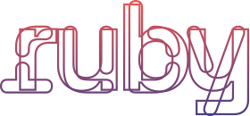
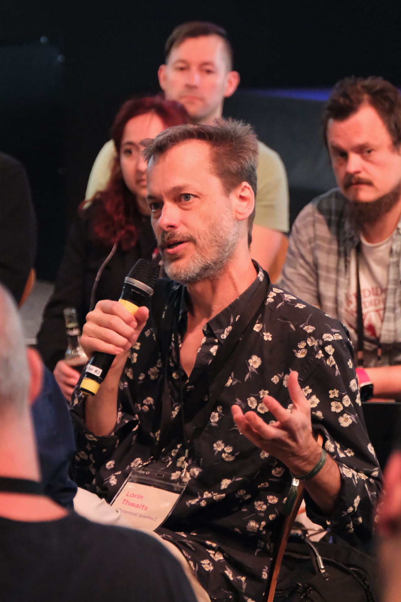
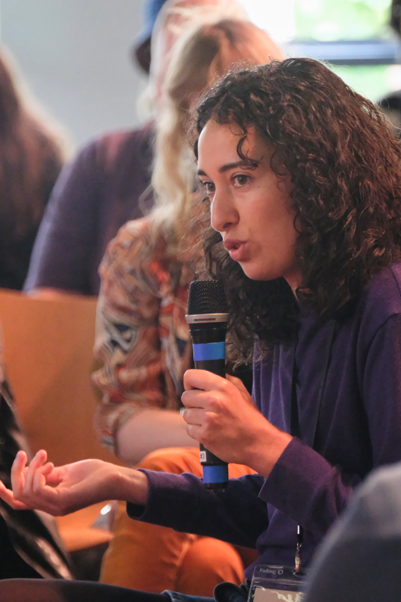
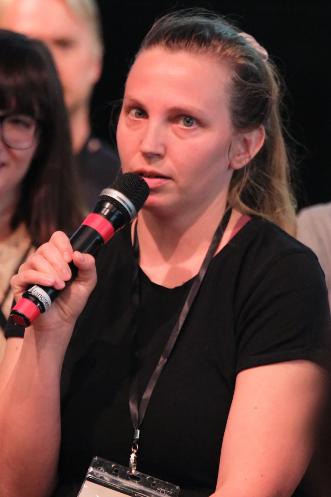
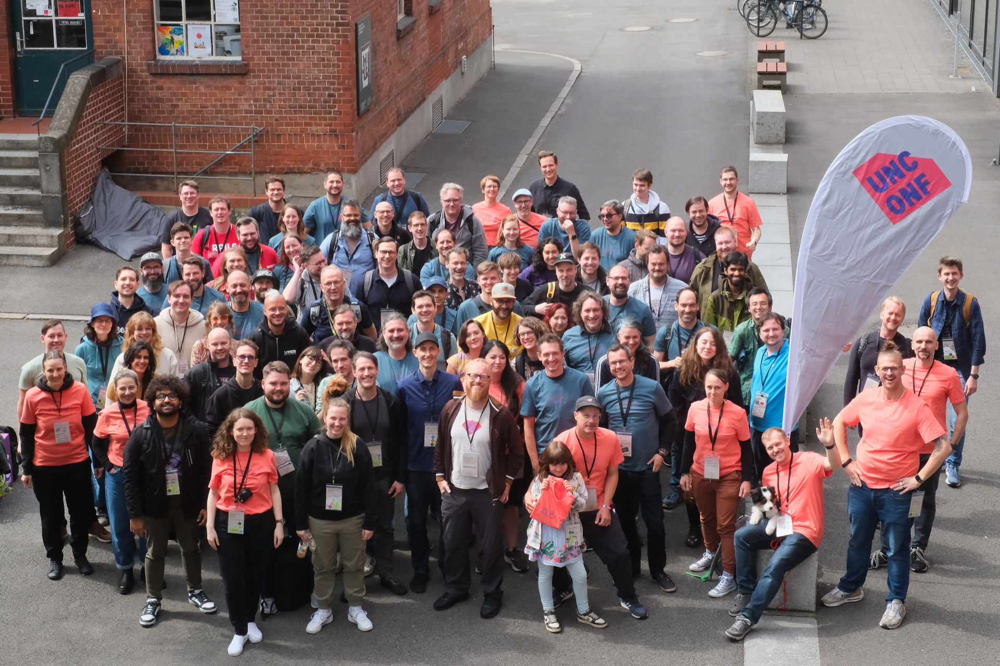

The 2024 edition of Ruby Unconf again took place at the Forum Finkenau of HAW Hamburg. A locaton we appreciate for accessability, hospitality and infrastructure. We again like to say "thank you" to our sponsors making all this possible. Thank you to all attendees bringing interesting talks and topics to the Unconf. And of course a big thank you to the whole MC team.
I also want to thank Herrmann and the Schanzenstern team for providing again a wonderful vegan/vegetarian catering to the Unconf.
We are currently still converting the video recordings to put them up on youtube. We will share the link as soon as they are available.
So what was this years Unconf all about?
After our first pitch session the orga team withdraw to create the schedule for Saturday while Eileen gave a keynote about TODO: add keynote description
Wow, that's a question to start an Unconf with. We put this as a fishbowl discussion right into the middle of the audience forming a pit to dig deep into the topic of less open positions for junior and even midlevel Ruby developers, a hesitant industry regarding starting up new Rails Businesses.



We were digging deeper into the problems of junior devs landing their first job in another panel discussion. Again it was clear that it gets harder every year to find a good job to start your career with Ruby.
Besides these existential questions we had a whole bunch of interesting talks on lazyness driven development, management of larger development teams and Joschka combining hardware and twitch the Ruby way.
On Sunday we started with breakfast and another pitch session. Following a talk I really liked doing some mob-refactoring of code Simon wasn't that fond of. Following was a trip down into the past with Jan talking about the BASICs.
After another fantastic Lunch we had some Hotwire Turbo Action, masking whole databases to use anonymized data to test. Closing the conference with some fast Lightning Talks.
Thank you all for coming, making this another successful Ruby Unconf in Hamburg.

{kind=link}
{kind=link}
{kind=link}